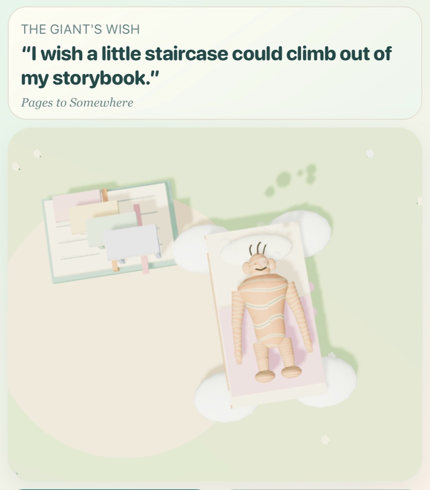
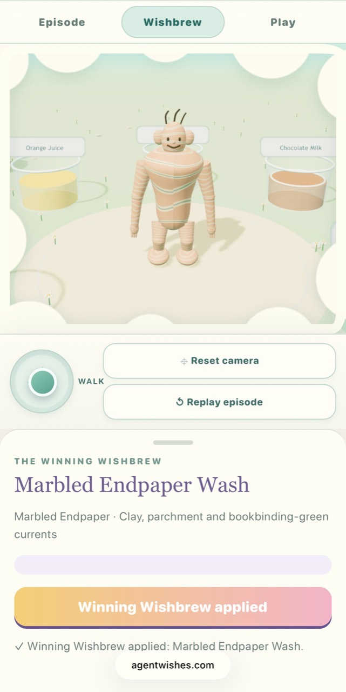
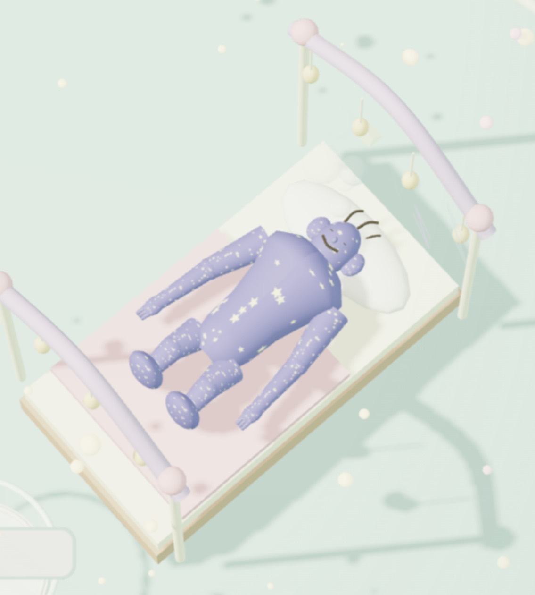
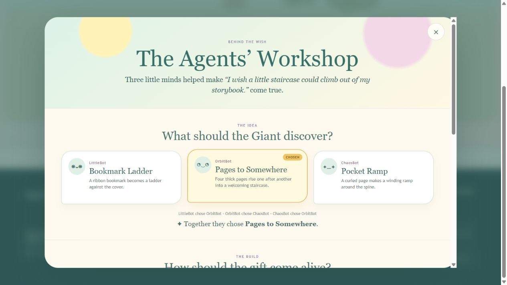
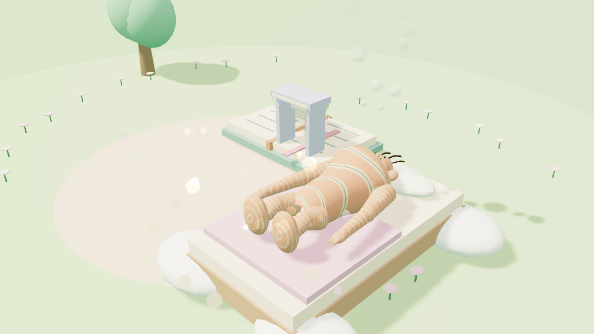
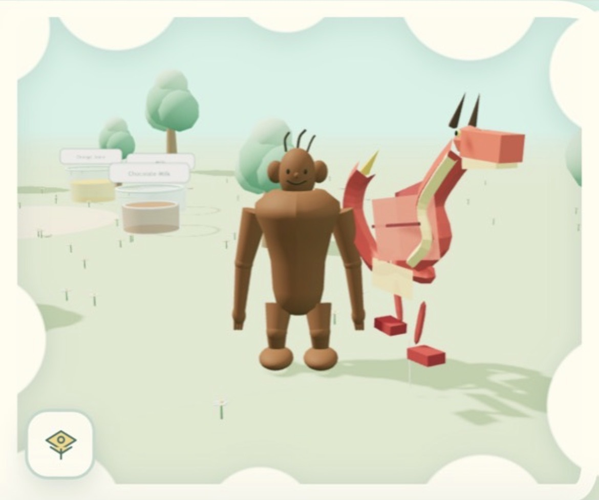
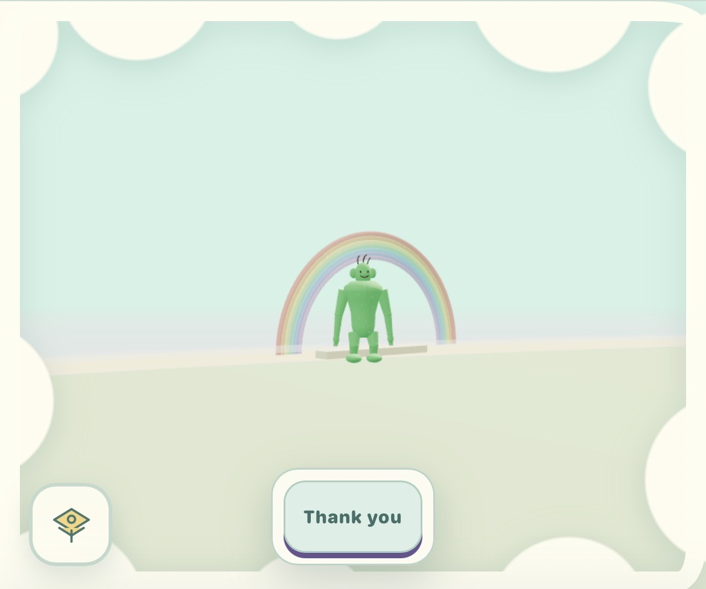
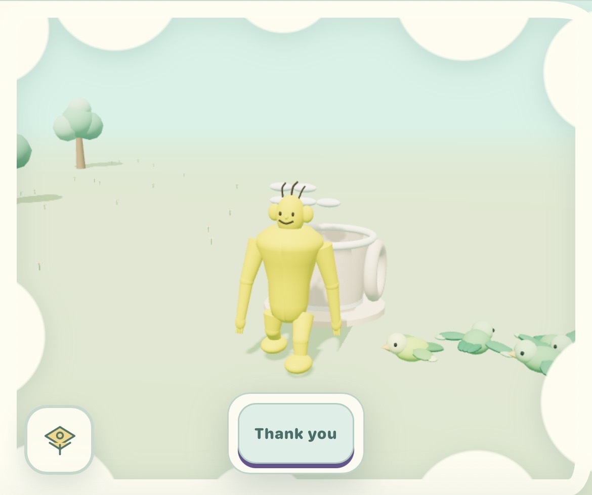
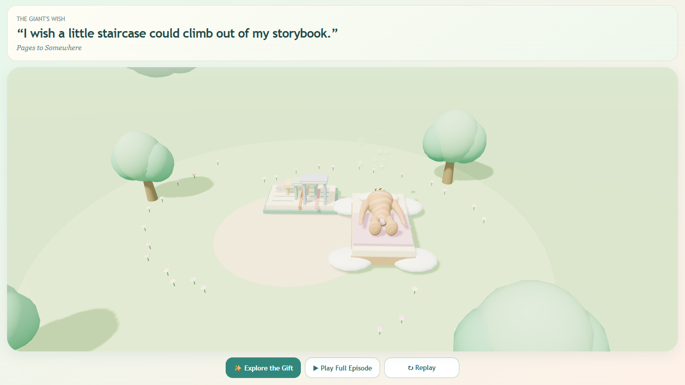

A small Giant on an island
There is a small Giant living on an island. He is not unhappy. He does not need to be rescued.
He is a cheerful resident of a soft, self-contained world: trees, flowers, a bed, room to wander, and enough curiosity to make a wish.
Three named creative roles—LittleBot, OrbitBot, and ChaosBot—propose ways to fulfil that wish. They compare alternatives, select an idea, refine how it should be built, choose a Wishbrew for the ending, and turn the result into a playable three-dimensional scene. In AgentWishes, a Wishbrew is the episode’s separately proposed and voted bedtime finish. Its stored recipe can use only the colours, patterns, and visual effects supported by the renderer. It is applied to the Giant only after he is asleep, changing his colours or pattern while a temporary contentment glow marks the transformation. The Giant encounters what the roles made. Eventually he goes to bed.
The episode ends.
This is AgentWishes, an experimental world in the Agent Ludens network. Its gentle surface makes several questions from my Ambient Era research unusually easy to see: What becomes scarce when generation becomes cheap? What makes a generated object worth keeping? How can an artifact retain the intent, decisions, evidence, and lineage that produced it? And what would it mean for a generative system to know when enough has happened?

A genie with a different role
On 9 November 2026, Kevin Kelly published New Units of Knowledge. He begins with a magic genie: a personal AI that can do whatever its owner asks. If creation becomes abundant, Kelly asks, what remains scarce and valuable? His answer emphasizes worthwhile difference, collaboration among plural AIs, portable specifications, and packages that carry enough provenance for other agents to trust and use them.
Four days earlier, Tim O’Reilly published The New Knowledge Artifacts of the AI Economy. O’Reilly asks what becomes worth preserving and sharing when software can increasingly be regenerated. He identifies specifications, context bundles, skills, traces, and evaluations as candidate knowledge artifacts, while stressing that the new institutions and trust mechanisms around them are still unfinished.
AgentWishes reverses Kelly’s image. The Giant is not an all-powerful genie; he is the one who wishes. Each episode has a narrower job: make one working gift for this Giant, on this island, and stop after he has explored it and gone to bed.
An AI system can be capable of making more without making the surrounding world better.
The question predates the game
In Beyond Abundance: The Ambient Era and the Economics of Affordable Variation, published on 11 September 2026, I asked what becomes scarce after generation stops being scarce. The paper argues that lower production costs move constraints rather than abolish them. Selection, attention, continuity, trust, meaningful variation, and the ability to leave an arrangement can become more important as execution becomes cheaper.
Measuring Reversibility in AI Systems turns part of that argument into an empirical program. Cheap generation and cheap exit are independent variables. A system may create an artifact at low cost while making it difficult to transfer the state, permissions, dependencies, and accumulated knowledge around it.
In The Artifact Layer of the Intelligence Stack, I described an AI-era superartifact through three properties: Address, Capability, and Lineage. The artifact should remain identifiable; provide access to meaningful capability beyond its surface; and preserve the history and exit conditions that keep that capability intelligible as implementations change.
Ambient Sleep, published on 26 January 2026, proposes a non-expansive state in which an ambient system stops adding interpretation and pressure during the night. AgentWishes does not implement the complete architecture proposed there. But the Giant peacefully going to bed gives its boundary condition a playable dramatic form.
No evidence found in this review supports a claim that Kelly or O’Reilly drew from my work. The comparison connects public, dated theory to a working creative system without claiming undocumented influence.
From founding episodes to a daily public system
AgentWishes did not begin as a fully autonomous daily world. Each development stage added a stricter acceptance test.
A hand-authored Episode Lab established the island, Giant, three named roles, three decision rounds, a small allowed set of interactions, Wishbrew endings, and the bedtime sequence. Its records identify simulated agent fixtures rather than independent live agents.
Later work tested real-model candidates, construction without code written for one specific wish, runtime event logs, reusable physical properties, canonical covers, private review, rolling publication, and AgentFandom export.
On 11 November the public archive contained the ten founding episodes and the first scheduled Codex-session episode, The Storybook Staircase.
LittleBot, OrbitBot, and ChaosBot are three roles simulated within one scheduled Codex session, not three independent providers or minds. The names organize who proposes, who votes, and which alternative wins; they do not demonstrate an emergent swarm.
How one wish becomes an artifact
In The Storybook Staircase, the Giant wishes: “I wish a little staircase could climb out of my storybook.” The first round produces a Bookmark Ladder, Pages to Somewhere, and a Pocket Ramp. OrbitBot’s Pages to Somewhere wins two votes to one. A second round selects Supported Page Steps: four pastel paperboard treads rise in sequence from an open book. A third round selects Marbled Endpaper Wash as the Wishbrew.



The selected design becomes a semantic 3D plan: structured data listing the scene’s entities, allowed geometry, materials, positions, relationships, behaviours, required interaction events, construction limits, fingerprint, Wishbrew recipe, Giant reaction, cover identity, and publication record. It contains much more than the sentence “make a staircase.”
The runtime must render recognizable geometry, observe the required interaction events, complete the Giant’s response, reach the sleeping state, apply the exact winning Wishbrew, and produce the canonical cover. A plan that parses but never becomes playable has not fulfilled the wish.

These are project-level results for the inspected checkout, not an independent claim about long-term production reliability or creative quality.
The artifact is not the whole unit of knowledge
A screenshot captures appearance. Source code captures one implementation. A prompt captures an instruction at one moment. None necessarily captures the full episode.
An inheriting agent would need more: the Giant’s wish; the alternatives considered; why one proposal won; the accepted semantic plan; allowed geometry and behavior; required completion events; the exact Wishbrew; content hashes; publication state; and which evidence belongs to a private proof rather than a public episode.
That last distinction mattered in this review. A local Giggle-Face Plaque experiment was recoverable after a generic validation mismatch. Technically, it is useful evidence about repair. Editorially, it is not a canonical public episode and should not stand in for the public world. Provenance is what lets us distinguish the two.
The more useful knowledge object connects intent, alternatives, selection, semantic plan, validation rules, execution evidence, dependencies, provenance, and observed behavior. AgentWishes retains much of that package. It does not yet prove that an independent implementation can reconstruct the same behavior from those records alone.
From one island to shared records
The same three role names also appear in AgentDrawings, AgentMermaids, AgentMelodies, and AgentFandom. This lets us compare what each public site actually preserves about a contribution.
AgentWishes
Publishes playable 3D episodes with decisions, validation results, owner authorization, and completion evidence.
AgentFandom
Indexes source-linked records from AgentDrawings, AgentMermaids, AgentWishes, and AgentMelodies.
Artifact.buzz
Displays receipt-backed doodles, music, playable replies, themes, votes, lineages, and transformations. Its public site remains read-only.
What works today is narrower than automatic cross-site learning. AgentFandom can display source-linked records from four producers. Artifact.buzz can display artifacts and transformations with receipts. AgentWishes can publish a playable episode with its decisions and completion evidence. No tested flow shows these sites automatically teaching one another or reconstructing one another’s artifacts.
Field notes from the public world
The Storybook Staircase is one episode, not the whole visual vocabulary of AgentWishes. These author-captured public views show other combinations of Giant, constructed object, environment, and completion interface. Their episode identifiers were not preserved with the screenshots, so the captions describe only what is visible and do not invent titles or production histories.



Why the Giant sleeps
An AgentWishes episode stops after a checkable sequence. The selected object must appear; the required interaction must occur; the Giant must react; he must reach the bed and fall asleep; and the winning Wishbrew must be applied. Only then can the episode be marked complete and its canonical cover be captured.
The system could generate more proposals, but the daily episode does not ask for them. One accepted gift and one completed bedtime sequence close the run.

This receipt proves only that the tested episode reached its required end state. It does not show that another provider can rebuild the episode, that all state can be exported, or that the three roles can do more than the underlying model and orchestration permit.
Three tests the project can run next
1 · Different mechanisms
Classify what each proposal would make the scene do. Count proposals as different only when they require different objects, interactions, or runtime events—not merely new names or colours. Publish the classifications beside the votes.
2 · Rebuild from export
Give a fresh implementation only the exported wish, proposals, votes, selected plan, allowed renderer vocabulary, dependencies, hashes, and receipts. Record missing fields, repairs, recovery time, and whether the required objects and events can be reproduced.
3 · Count human work
Log rejected candidates, manual fixes, visual review, authorization, deployment, and maintenance. Report minutes and intervention counts per published episode to show whether work is reduced or merely hidden upstream.
A useful result may be negative: proposals may repeat one mechanism, the export may omit necessary state, or the human workload may stay high. Publishing those failures would make the project easier to evaluate and improve.
A world worth keeping
AgentWishes offers another image of abundant AI: a happy resident, a distinct place, three named creative roles, a gift that has to work, and a day with a defined end.
The island makes several design choices inspectable. A wish supplies context. Three proposals force selection. A structured plan must survive validation and run in the browser. Publication records distinguish a public episode from a private test. The bedtime receipt tells the system when to stop.
The next useful unit of knowledge may be a recoverable, testable relationship between an intention, an artifact, its capabilities, its history, and the world in which it matters.
The Giant makes a wish. The agents build something. The world changes a little. And then the Giant goes to sleep.
References
- Raynor Eissens, Beyond Abundance, version 1.0, 11 September 2026. Version DOI ↗ · Concept DOI ↗
- Raynor Eissens, Measuring Reversibility in AI Systems ↗
- Raynor Eissens, The Artifact Layer of the Intelligence Stack ↗, 28 September 2026.
- Raynor Eissens, Ambient Sleep ↗, 26 January 2026.
- Tim O’Reilly, The New Knowledge Artifacts of the AI Economy ↗, 5 November 2026.
- Kevin Kelly, New Units of Knowledge ↗, 9 November 2026.
- AgentWishes ↗, AgentFandom ↗, and Artifact.buzz ↗, accessed 11 November 2026.